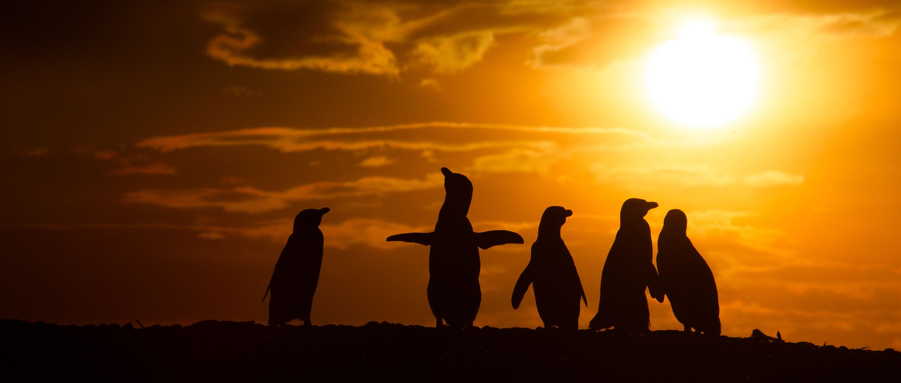

Fauna de la Patagonia argentina
Wildlife of Argentine Patagonia
Ballenas, toninas overas, pingüinos, elefantes marinos, flamencos y aves costeras de la Patagonia argentina, fotografiados en libertad en sus ambientes naturales.
Whales, Commerson's dolphins, penguins, elephant seals, flamingos and shorebirds of Argentine Patagonia, photographed in the wild in their natural habitats.
Con el impulso de Lyra Films
Backed by Lyra Films
